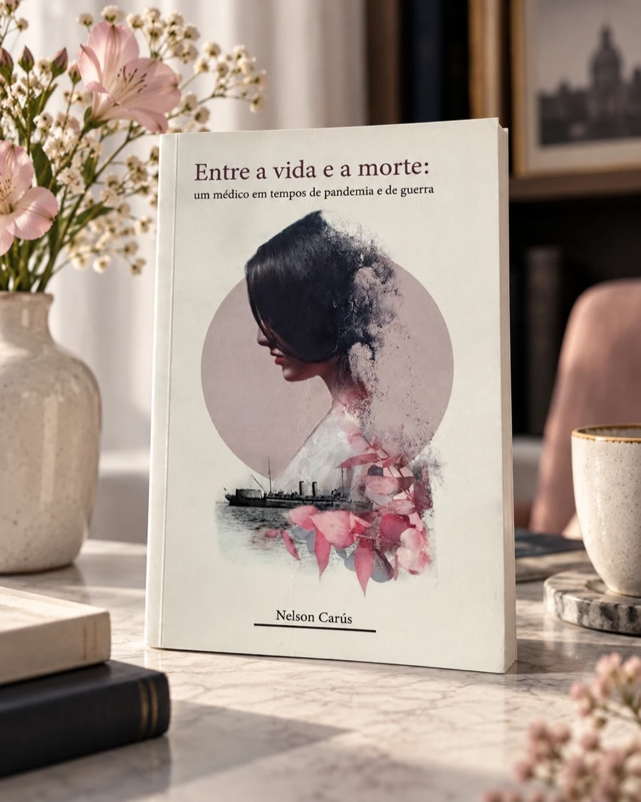

Livro 01
Entre a vida e a morte
um médico em tempos de pandemia e de guerra
Em meio à guerra, à doença e à incerteza, até onde alguém é capaz de ir para salvar uma vida?
O livro acompanha a trajetória de Scylla Teixeira, jovem médico integrante da Missão Médica Brasileira durante a Primeira Guerra Mundial. Recém-formado, ele se vê diante de dois inimigos implacáveis: os horrores da guerra e a devastadora gripe espanhola.
Inspirada em memórias familiares, conhecimentos médicos e registros históricos, a obra atravessa diferentes tempos para revelar algo que permanece profundamente atual: por trás do jaleco existem pessoas que também sentem medo, cansaço e incerteza — e, ainda assim, escolhem cuidar.
Uma história sobre medicina, coragem, humanidade e a delicada fronteira entre a vida e a morte.